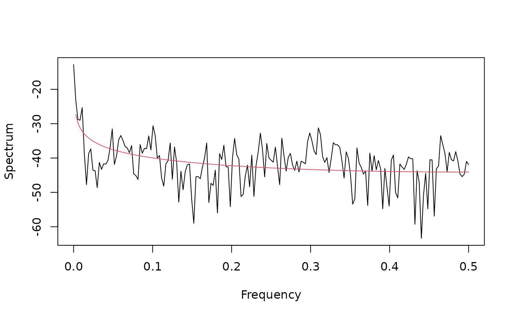

fdp.mle.RdParameter estimation for a fractional difference (long-memory, self-similar) process is performed via maximum likelihood on the wavelet coefficients.
| y | Dyadic length time series. |
|---|---|
| wf | Name of the wavelet filter to use in the decomposition. See
|
| J | Depth of the discrete wavelet transform. |
List containing the maximum likelihood estimates (MLEs) of \(d\) and \(\sigma^2\), along with the value of the likelihood for those estimates.
The variance-covariance matrix of the original time series is approximated by its wavelet-based equivalent. A Whittle-type likelihood is then constructed where the sums of squared wavelet coefficients are compared to bandpass filtered version of the true spectrum. Minimization occurs only for the fractional difference parameter \(d\), while variance is estimated afterwards.
M. J. Jensen (2000) An alternative maximum likelihood estimator of long-memory processes using compactly supported wavelets, Journal of Economic Dynamics and Control, 24, No. 3, 361-387.
McCoy, E. J., and A. T. Walden (1996) Wavelet analysis and synthesis of stationary long-memory processes, Journal for Computational and Graphical Statistics, 5, No. 1, 26-56.
Percival, D. B. and A. T. Walden (2000) Wavelet Methods for Time Series Analysis, Cambridge University Press.
B. Whitcher
## Figure 5.5 in Gencay, Selcuk and Whitcher (2001)
fdp.sdf <- function(freq, d, sigma2=1)
sigma2 / ((2*sin(pi * freq))^2)^d
dB <- function(x) 10 * log10(x)
per <- function(z) {
n <- length(z)
(Mod(fft(z))**2/(2*pi*n))[1:(n %/% 2 + 1)]
}
data(ibm)
ibm.returns <- diff(log(ibm))
ibm.volatility <- abs(ibm.returns)
ibm.vol.mle <- fdp.mle(ibm.volatility, "d4", 4)
freq <- 0:184/368
ibm.vol.per <- 2 * pi * per(ibm.volatility)
ibm.vol.resid <- ibm.vol.per/ fdp.sdf(freq, ibm.vol.mle$parameters[1])
par(mfrow=c(1,1), las=0, pty="m")
plot(freq, dB(ibm.vol.per), type="l", xlab="Frequency", ylab="Spectrum")
lines(freq, dB(fdp.sdf(freq, ibm.vol.mle$parameters[1],
ibm.vol.mle$parameters[2]/2)), col=2)
